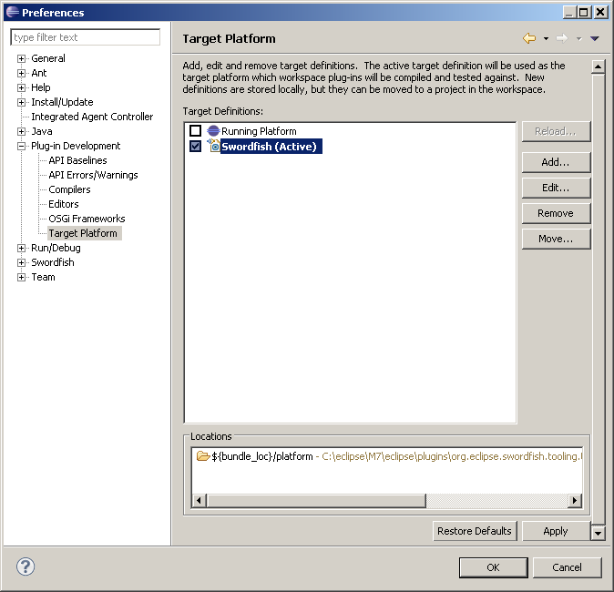

This chapter describes how to configure Eclipse for the Swordfish target platform.
To configure Eclipse for the Swordfish platform:
-
Click
 and click Add.
and click Add.
-
In the New Target Definition window, select the Template check box and select Swordfish. Click Next.
-
Create a new target definition and click Finish.

-
In the Target Definitions window, select the Swordfish check box. Click Apply.
-
Click OK to confirm your actions.